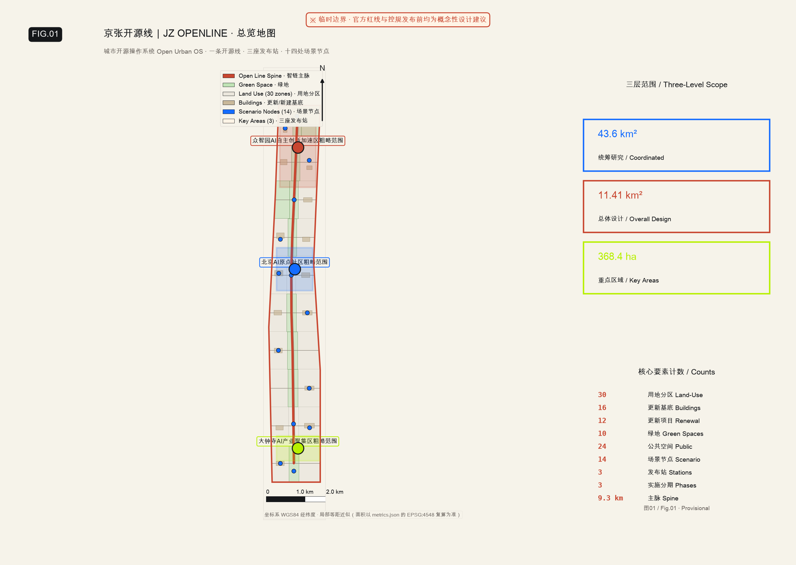
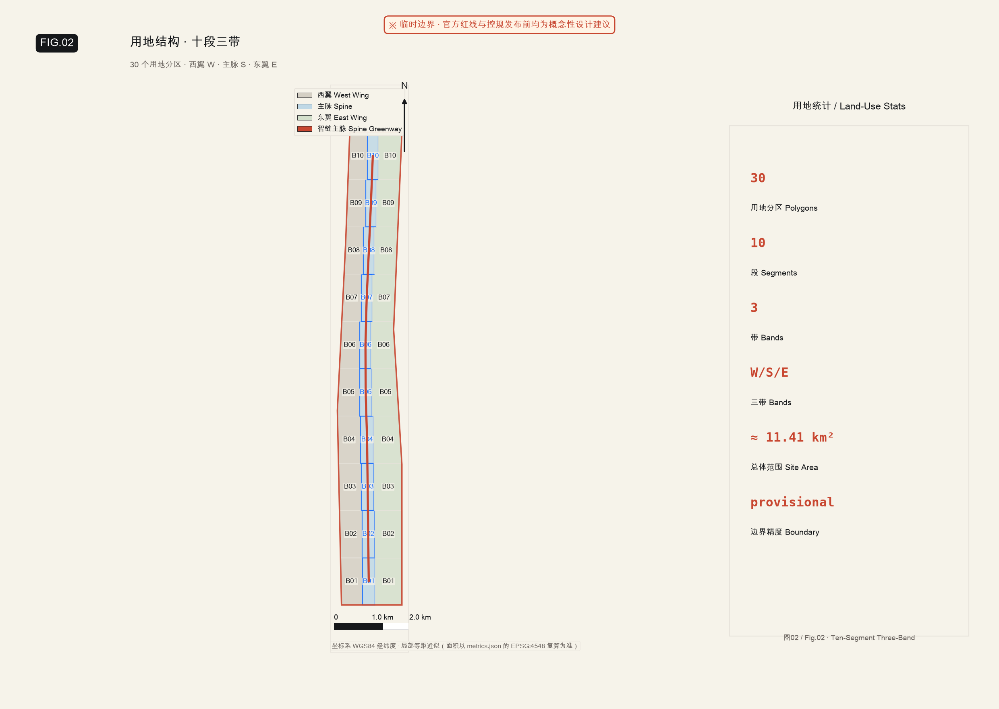
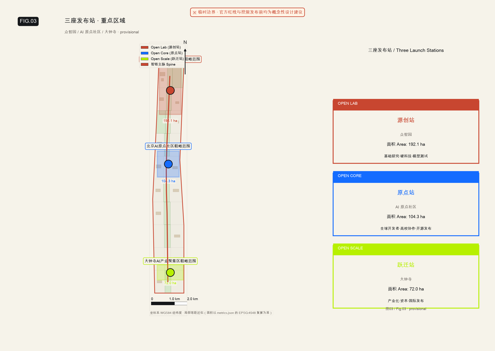
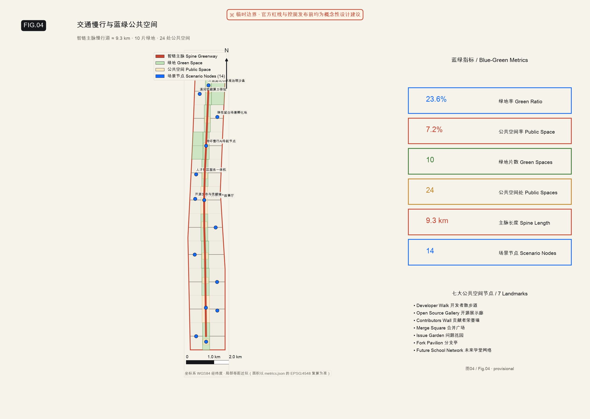
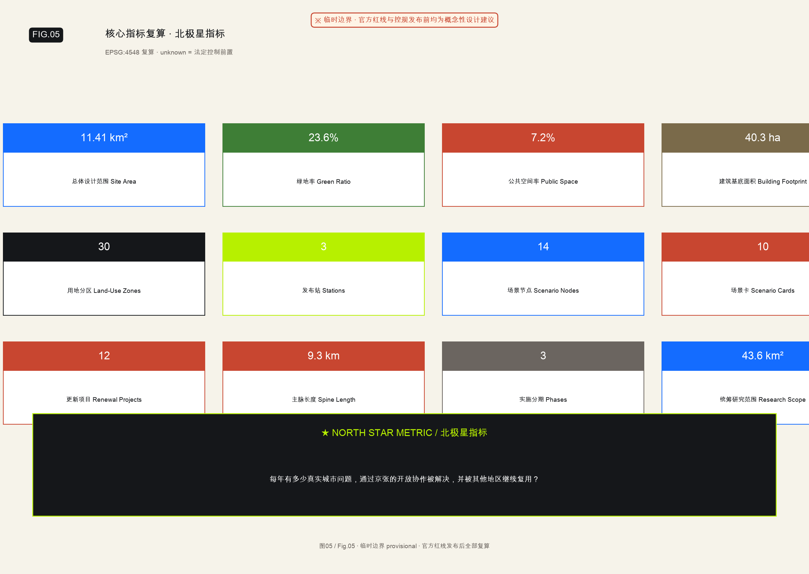

京张开源线｜JZ OPENLINE
城市开源操作系统（Open Urban OS）· WorkBuddy Urban Design Agent · Provisional constraint · EPSG:4548
城市开源操作系统（Open Urban OS）· WorkBuddy Urban Design Agent · Provisional constraint · EPSG:4548

母概念：城市开源操作系统（Open Urban OS）——把京张铁路遗址公园从"展示 AI 的空间"，升级为一套以开源方式组织创新、产业与日常生活的城市操作系统。
公共品牌：京张开源线｜JZ OPENLINE — 自主开源，共创共享
空间结构："一条开源线 + 三座发布站 + 若干城市仓库 + 未来学堂网络"
| 层级 | 面积 | 定位 |
|---|---|---|
| 统筹研究范围 | 43.6 km² | 五层城市开源栈：开放科学 → 开放基础设施 → 开放转化 → 开放街区 → 开放社区 |
| 总体设计范围 | 11.41 km² | 一条开源线 + 三座发布站 + 30 个用地分区 + 16 个更新基底 + 12 条道路 + 10 片绿地 + 24 处公共空间 |
| 重点区域范围 | 368.4 ha | 三座发布站：源创站 / 原点站 / 跃迁站 |

统筹研究决定产业链判断（五层开源栈），总体设计落实到更新项目和空间结构（十段三带），重点区域验证三座发布站的实施可行性。三者不是割裂的图纸集合，而是逐级深化的同一设计逻辑。
把海淀既有的 AI 原始创新资源，直接组成"城市开源操作系统"的首批运行模块。
| 系统角色 | 既有项目 | 在京张开源线中的作用 |
|---|---|---|
| 问题引擎 | AI与老年友好·人机共生挑战 | 从医院、社区发现真实问题，组织居民、学生、开发者共同提出并验证方案 |
| 学习引擎 | OpenSchool + 社区学堂 | 连接开放课程、项目式学习与社区真实议题，让整条创新带成为开放校园 |
| 组织引擎 | 领学官计划 | 在每个节点持续组织学习、挑战、协作，把空间客流转化为稳定社区 |
| 产业引擎 | AI指挥官 | 面向企业和园区，连接 AI 认知、场景发现、能力建设与孵化支持 |
| 空间界面 | 未来学堂 | 公园与街区中的实体节点，同时连接 OpenSchool、开源社区与全球协作网络 |
开源循环：医疗教育企业社区发布问题 → 未来学堂汇集 → OpenSchool 组织学习 → 领学官组织本地协作 → 挑战赛产生方案 → AI指挥官推动落地 → OpenLine Repo 连接全球 → 成果回到医院学校园区社区。

192.1 ha · 花园型全栈自主创新街区
核心角色：开放实验街、模型竞技场、共享实验工坊。空间动作：清河界面开放为低碳创新客厅；园区内环慢行接入开源线主脉。AI 场景：标准治理沙盒、低碳算力驿站。
104.3 ha · 全球开发者与高校协作核心社区
核心角色：开源会客厅、Maintainer House、Merge Square 合并广场。空间动作：清华园站遗产广场缝合校区—园区—街区。AI 场景：开源发布厅、成果孵化厅。
72.0 ha · 产业化、资本、国际发布总站
核心角色：AI 首发中心、资本会客厅、全球路演站台。空间动作：大钟寺站门户广场+四象限步行连通。AI 场景：国际路演客厅、数据要素会客厅、JZ Open Week 站点。
用地分区：30 个 LU 多边形，采用十段三带（B01–B10 × W/S/E）划分，完整覆盖设计范围，拓扑差 11.7 ㎡ < 容差。
建筑基底：16 个 BLDG 更新建筑基底，总基底面积 40.3 ha，占设计范围 3.5%。策略以改造提升为主、拆除重建为辅。

ROAD-SPINE 开源线主脉：约 9.3 km 连续步行+骑行绿道，串联三座发布站与全部未来学堂节点。
四项断点策略：北五环连桥、清华园站广场组合、大钟寺四象限退让、五道口小尺度街巷。
绿地率：23.6% （10 片 GREEN 分区沿主脉分布）
公共空间率：7.2% （24 处：2 门厅广场 + 8 公共客厅 + 14 场景节点/未来学堂）
七大地标：Developer Walk 开发者散步道 → Open Source Gallery 开源成果展示廊 → Contributors Wall 贡献者荣誉墙 → Merge Square 合并广场 → Issue Garden 问题花园 → Fork Pavilion 分支亭网络 → Future School Network 未来学堂网络
16 个更新建筑基底含 renewal_action 字段（保留/改造/新建）。建筑高度和体量控制为建议级，待文保+控规确认后升级为管控条件。
12 项更新项目（JZ-001 至 JZ-012），涵盖 Developer Walk、Merge Square、Issue Garden、Fork Pavilion、未来学堂节点、清河低碳廊、源创站开放实验街、跃迁站路演客厅、Agent Storefront、OpenLine Repo、JZ Open Week 等。
三期实施：
| 阶段 | 时间 | 重点 |
|---|---|---|
| 近期 | 0–6 月 | 建立协议与样板：品牌母概念、首批 Issue 清单、未来学堂原型、Developer Walk 首段、临时 Merge Square |
| 中期 | 6–18 月 | 形成可见网络：三站打通、维护者驻留、开源加速器、贡献者荣誉体系 |
| 长期 | 18–36 月 | 全球网络效应：其他城市复用京张模块、全球合作节点、JZ Open Week 成为年度目的地 |
14 处已落图场景节点（SCENARIO_NODE），覆盖 3 个赛道场景：
ai-traffic-walkability enterprise-service-copilot public-safety-operations-review
四大未来学堂类型：未来健康学堂（老年友好·医患共创）、未来开放学堂（OpenSchool·社区学堂）、未来产业学堂（AI指挥官·企业诊断）、未来开源学堂（维护者活动·全球连线）。
| 编号 | 名称 | 空间载体 | 说明 |
|---|---|---|---|
| 01 | 开源发布厅 | 原点站 | 高校/开源社区/初创团队成果发布与小型路演 |
| 02 | 安全治理沙盒 | 源创站 | 标准制定、安全评测、红队测试转译为可参观节点 |
| 03 | 端侧算力驿站 | 总体范围节点 | 与公共服务/低碳能源结合的新型基础设施原型 |
| 04 | AI 慢行导航 | 京张遗址公园 | 可解释导视 + 低侵入传感识别断点与需求 |
| 05 | 国际路演客厅 | 跃迁站 | 智能/终端/内容企业展示洽谈与国际交流 |
| 06 | 清河低碳廊 | 源创站临清河 | 绿色空间 + 雨洪 + 步行骑行 + AI 展示 |
| 07 | 近校转化街 | 原点站 | 孵化/展示/法务/知识产权/投融资服务 |
| 08 | 数据要素会客厅 | 跃迁站 | 合规授权审计前提下的数据要素流通界面 |
| 09 | AI 生活样板街 | 社区商业交汇处 | 医疗/教育/法律/生活 AI+ 场景运营街区 |
| 10 | 全球 JZ Open Week 路线 | 一带公共空间 | 遗址文化→开源社区→产业展示→国际路演体验路线 |
| 画像 | 典型需求 | 空间响应 | 隐私边界 |
|---|---|---|---|
| 开源开发者 | 发布、协作、测试、社区声誉 | 原点站开源会客厅、夜间协作空间 | 不采集个人轨迹；活动数据只做聚合统计 |
| 初创团队 | 低成本办公、算力入口、产品试验场 | 源创站共享实验工坊、端侧算力服务点 | 算力和数据服务需另行授权 |
| 头部企业访客 | 展示、商务、国际接待 | 跃迁站资本会客厅、轨道接驳 | 企业标识须清权 |
| 周边居民 | 通勤、休闲、社区服务 | 开源线慢行环、未来学堂嵌入 | 不用于商业推荐 |
| 高校师生 | 成果转化、跨校协作 | 校区—园区慢行缝合、转化驿站 | 校园数据和科研成果需授权 |
所有 AI 场景遵循数据最小化与人工复核原则；每个试点公开责任主体、试验期限与退出按钮。
不做三个年代展区，而是组织为五个动作——
1 BUILD 自主建造：京张铁路与詹天佑工程文化，回答"我们如何获得自主建造能力"。
2 CONNECT 连接流动：铁路如何改变城市、产业和人的流动。
3 COMPUTE 计算兴起：中关村从科研院所、电子一条街到数字产业。
4 CONTRIBUTE 共同贡献：开源如何改变知识生产、企业创新和公众参与。
5 RELEASE 发布未来：在街区中运行的 AI 场景与全球发布平台。
路线终点不是"未来馆"，而是正在发生项目发布和公共讨论的 Merge Square。参观者最后要做一件事——提交一个问题、测试一个项目、贡献一段文档或加入一次活动——从游客转变为贡献者。

北极星指标：每年有多少真实城市问题通过京张的开放协作被解决并被其他地区复用？
公告 1.3 / 1.4 / 1.5 及 agent.1–agent.6 全部映射到章节、图层、指标、图纸、HTML、来源、假设和自检项。详见 compliance_matrix.json。
| 审查项 | 状态 | 备注 |
|---|---|---|
| deterministic validation | PASS | manifest / 矩阵 / 章节 / 双语配套全部通过 |
| spatial_review | PASS | 唯一提示：3 处 KEY_AREA 为 provisional（已作为假设披露） |
| visual_review | PASS | 本页面 |
| professional_review | PASS | 证据链完整 |
| 综合结论 | PASS | Can enter formal review: YES |
运行命令：scripts/self_check_submission.py --pr-author flyingpig707 submissions/flyingpig707/jz-openline-jingzhang-belt
OFFICIAL-ANNOUNCEMENT · AGENT-TASKBOOK · SOURCE-REGISTRY · PROCESSED-FACT-PACK · BOUNDARY-SOURCE · KEY-AREA-SOURCE · SITE-PACKAGE · JINGZHANG-HERITAGE-CONTEXT · STANDARD-* 共 11 条来源。详见 sources.json。
| ID | 内容 |
|---|---|
| A-BOUNDARY-002 | site_boundary 为 provisional_constraint，非官方 redline |
| A-KEYAREA-003 | key_areas 为 provisional_constraint，面积为公告值 |
| A-LANDUSE-004 | FAR/限高/密度/退线未知，不编造数值 |
| A-HERITAGE-005 | 京张遗产保护范围待官方确认 |
| A-WATER-006 | 清河蓝线待官方确认 |
| A-RAIL-007 | 轨道站点接口条件待确认 |
| A-SCENARIO-008 | 场景运营主体和数据治理机制待建立 |